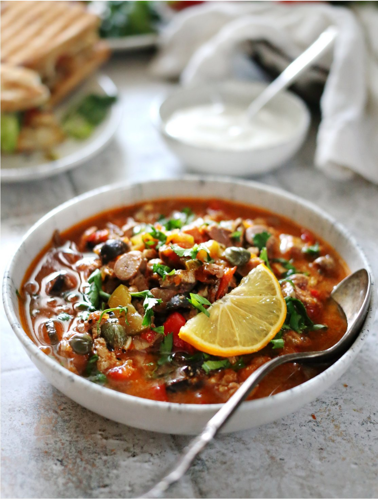

В отличие от сборной солянки с добавлением ассорти колбас, почек и мяса, эта солянка готовится в основном из куриных потрошков.
Куриная печень не требует длительного приготовления, поэтому ее добавляют в самом конце варки. Если вы не любите какой-то из субпродуктов, можно приготовить суп только из сердечек и желудочков, или из чего-то одного, увеличив общее количество.
Добавление в солянку маслин считается непреложной классикой еще с советских времен. По возможности рекомендуем заменить качественными оливками, например, каламата.